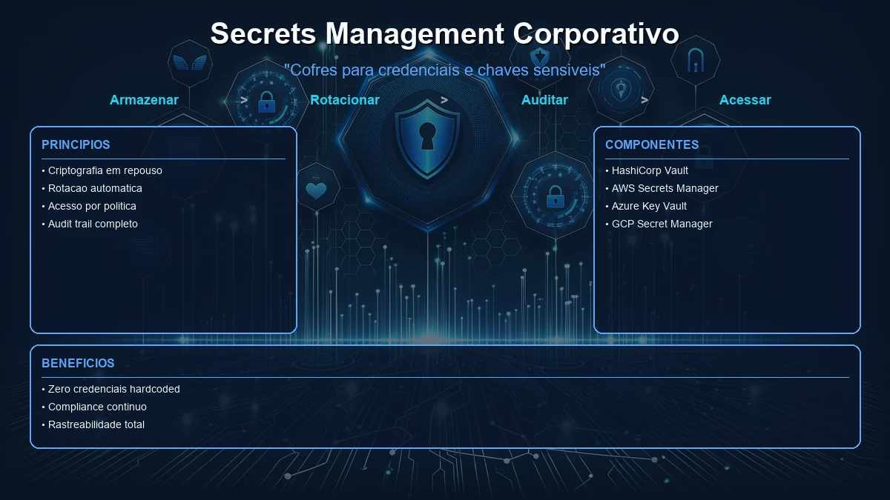

No atual panorama de seguranca da informacao, o gerenciamento de segredos corporativos e essencial para proteger credenciais e dados sensiveis. Ferramentas como HashiCorp Vault, AWS Secrets Manager, Azure Key Vault e GCP Secret Manager sao cruciais para mitigar riscos associados a exposicao de segredos. Este artigo analisa essas ferramentas, seus casos de uso e criterios de escolha.
HashiCorp Vault
HashiCorp Vault e uma ferramenta de gerenciamento de segredos que oferece um alto nivel de controle sobre o acesso a dados sensiveis. Ele permite a rotacao automatica de credenciais e a integracao com varias plataformas de nuvem.
Funcionalidades principais
O Vault oferece criptografia de dados em repouso e em transito, alem de autenticação baseada em politicas. Ele tambem suporta a integracao com sistemas de identidade para controle de acesso.
Casos de uso
Empresas que necessitam de um controle granular sobre o acesso a segredos e que operam em ambientes multi-nuvem frequentemente escolhem o Vault. Ele e ideal para organizacoes que precisam de uma solucao flexivel e extensivel.
AWS Secrets Manager
AWS Secrets Manager e uma solucao de gerenciamento de segredos que se integra profundamente com os servicos da AWS. Ele oferece rotacao automatica de segredos e gerenciamento centralizado de credenciais.
Funcionalidades principais
O AWS Secrets Manager permite a rotacao automatica de segredos para servicos nativos da AWS. Ele tambem fornece auditoria e monitoramento de acesso a segredos.
Casos de uso
Organizacoes que ja utilizam a AWS para suas operacoes podem se beneficiar da integracao nativa do Secrets Manager. Ele e ideal para empresas que buscam simplicidade e automatizacao em ambientes AWS.
Azure Key Vault
Azure Key Vault e uma ferramenta de gerenciamento de segredos que se integra com o ecossistema Azure. Ele oferece armazenamento seguro de chaves, segredos e certificados.
Funcionalidades principais
O Key Vault permite a gerencia de segredos com controle de acesso baseado em funcoes. Ele tambem oferece suporte para a integracao com o Azure Active Directory.
Casos de uso
Empresas que utilizam o Azure como sua principal plataforma de nuvem podem se beneficiar do Key Vault. Ele e adequado para organizacoes que necessitam de uma solucao integrada e segura para o gerenciamento de segredos.
GCP Secret Manager
GCP Secret Manager oferece uma solucao de gerenciamento de segredos para o Google Cloud Platform. Ele fornece armazenamento seguro e gerenciamento de acesso para segredos.
Funcionalidades principais
O Secret Manager do GCP permite o armazenamento gerenciado de segredos com controle de acesso detalhado. Ele tambem oferece suporte para a integracao com o Google Cloud IAM.
Casos de uso
Organizacoes que utilizam o Google Cloud Platform podem se beneficiar do Secret Manager devido a sua integracao nativa. Ele e ideal para empresas que buscam uma solucao gerenciada e segura para o gerenciamento de segredos.
| Ferramenta | Rotacao Automatica | Integracao Nativa | Controle de Acesso |
|---|---|---|---|
| HashiCorp Vault | Sim | Multi-nuvem | Granular |
| AWS Secrets Manager | Sim | AWS | Centralizado |
| Azure Key Vault | Sim | Azure | Baseado em funcoes |
| GCP Secret Manager | Sim | GCP | Detalhado |
Avaliar necessidades de integracao
Determine quais plataformas de nuvem sua organizacao utiliza e quais integracoes sao necessarias para o gerenciamento de segredos.
Definir politicas de acesso
Estabeleca politicas claras de quem pode acessar quais segredos e em quais circunstancias.
Implementar e monitorar
Implemente a ferramenta escolhida e configure monitoramento continuo para garantir que os segredos estejam protegidos.
Perguntas Frequentes
HashiCorp Vault e uma ferramenta de gerenciamento de segredos que permite armazenar, gerenciar e acessar informacoes sensiveis com seguranca.
AWS Secrets Manager fornece rotacao automatica para servicos nativos da AWS, enquanto o GCP Secret Manager permite armazenamento gerenciado com menos automatizacao.
Avalie sua infraestrutura, as integracoes necessarias e o nivel de controle desejado sobre os segredos.
Exposicao de dados, fraudes ciberneticas e roubo de identidade, que podem resultar em grandes perdas financeiras e danos a reputacao.
Conclusao
Ferramentas de gerenciamento de segredos sao essenciais para proteger informacoes sensiveis no ambiente corporativo. A escolha da ferramenta certa, combinada com praticas de seguranca adequadas, pode mitigar riscos significativos e melhorar a postura de seguranca da organizacao.
Ao considerar suas opcoes, e importante avaliar as necessidades especificas de sua empresa em termos de integracao, controle de acesso e automacao. Com a ferramenta certa, sua organizacao pode garantir que seus segredos estejam sempre protegidos.